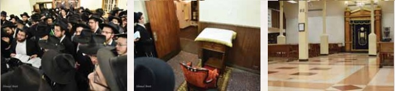

הזאל הגדול של בית חיינו נסגר כדי לנקות אותו לקראת חג הפסח, והתפילות התקיימו בזאל
החל משעות הלילה המאוחרות אתמול בלילה, עמלים מספר תמימים חרוצים על קישוט וארגון 770, לקראת הכינוס הגדול שייערך כאן היום - המפגש השנתי לישראלים ודוברי עברית בניו יורק, לכבוד יום הולדתו של מלכנו משיחנו - נשיא הדור.

החל משעות הלילה המאוחרות אתמול בלילה, עמלים מספר תמימים חרוצים על קישוט וארגון 770, לקראת הכינוס הגדול שייערך כאן היום - המפגש השנתי לישראלים ודוברי עברית בניו יורק, לכבוד יום הולדתו של מלכנו משיחנו - נשיא הדור.
אחרי תפילת שחרית, מתקיימת בקדמת 770 התוועדות בר מצווה לתמים יוסף יצחק זילבר.
המסך הגדול על הקיר הדרומי המראה את זמני היום, מקבל היום מסגרת חדשה מעץ - “לפאר ולרומם את בית אלוקינו”.
לאחר תפילת מנחה מתפנה הזאל הגדול מקהל המתפללים, ומתחילות ההכנות הקדחתניות לנקות ולסדר את 770, ואט אט הופך המקום לאולם אירועים מפואר.
בשעה 7:30 בדיוק נפתחים השערים, ומתחילים להתאסף מקורבים מכל רחבי ניו יורק, לכינוס מפואר ומושקע, שכל כולו מתנה לרבי שליט”א מלך המשיח [דיווח מפורט מהכינוס התפרסם בגיליון הקודם].
שיאו של הכינוס הוא בתפילת מעריב במניין הרבי שליט”א מלך המשיח. התזמורת פוצחת בשירת ‘יחי’, שטיח אדום נפרש, והקהל כולו נעמד הכן לכניסתו של הרבי לתפילה. רגעי האמונה הפשוטים האלה, נחקקים בזכרונו של כל אחד מהמשתתפים, ומחזקים את הידיעה הברורה שהנה זה קורה - והרבי שליט”א מתגלה וגואל אותנו.
יום שני, ז’ ניסן
אחרי תפילת שחרית מתקיימת בקדמת 770, התוועדות לתמים שהחל היום להניח תפילין, ובחר לעשות זאת - כמובן, בבית המקדש–מעט העיקרי של דורנו.
מיזם חדש עולה היום בקרב תלמידי הקבוצה - “מהיום אני מחובר”. עדכונים שוטפים על התוועדויות, אירועים, ועניינים הקשורים לתמימים בקבוצה, שיגיעו לכל אחד מהתמימים באמצעות הודעת סמס. את המיזם יצר אחד מהתמימים, וכולם מברכים אותו על היוזמה הברוכה.
את לובי הכניסה לבית חיינו מתחילות לפאר שוב מזוודות רבות. תמימים רבים, וכן לא מעט אברכים ואנ”ש, שהגיעו לחגוג את יום הולדתו של הרבי שליט”א מלך המשיח - במחיצתו. רובם של האורחים גם יישארו פה לחג הפסח, אך ישנם גם כאלה שלא וויתרו על הזכות להגיע לרבי בי”א ניסן, ולמרות הקביעות של השנה - בה חל י”א ניסן ביום שישי, ייסעו מכאן רק במוצאי שבת הגדול.
אחרי תפילת מעריב מתקיים במזרח 770 סדר לקוטי שיחות כמדי שבוע. תמימים רבים יושבים והוגים בתורתו של משיח, מתוך ידיעה שזו ההכנה הטובה ביותר לי”א בניסן - “ההתקשרות האמתית היא על ידי לימוד השיחות”. בסיום הסדר נערכות ההגרלות הקבועות כמיטב המסורת.
לאחר מכן נפתחת ההתוועדות השבועית הקבועה, בפינה הצפונית מזרחית - לזירוז התגלותו של מלך המשיח, ולחיזוק האמונה בנצחיות חייו.
יום שלישי, ח’ ניסן
תחת הכותרת ‘בפסח הזה מחליפים את הארון’, מתקיימת היום עבור תלמידי התמימים, מכירה מיוחדת מטעם קופת בחורים, של מוצרי הלבשה ופריטים נוספים.
הלילה מתקיימת ב’ר’ געצל’ס שול’ התוועדות מיוחדת עבור תלמידי התמימים, יחד עם הרה”ח משה הלל - משפיע בישיבות תות”ל אור יהודה.
יום רביעי, ט’ ניסן
אחרי תפילת שחרית, מתקיימת בקדמת 770 התוועדות עם הרה”ח דוד נחשון - יו”ר תנועת הנוער צ”ה ומנכ”ל ניידות חב”ד בארה”ק, לרגל בר המצווה לנכדו התמים אברהם שי’. כמו כן, מתקיימת התוועדות הנחת תפילין לת’ שלום דובער בורוויץ.
הלילה מתקיים שיעור מיוחד עם המרא דאתרא וחבר הבד”צ הגה”ח יוסף ישעיה ברוין, לקראת חג הפסח הבעל”ט. השיעור עוסק בשאלות הלכתיות בענייני החג, ורבים משתתפים בו.
לאחר מכן מתקיימת בזאל הקטן התוועדות בר המצווה לת’ אברהם נחשון, יחד עם הרב דוד נחשון והרב ברוין.
יום חמישי, י’ ניסן
בתפילת שחרית ניגש כש”ץ הרה”ח מענדל דרייזין, לרגל יארצייט על אביו - המשפיע הרה”ח אברהם דרייזין. לאחר התפילה הוא מזמין את קהל המתפללים לומר ‘לחיים’ ולהתוועד לעילוי נשמתו.
בשעות אלו חולפים בשדרת איסטערן פארקוויי, מול בית המקדש, עשרות עשרות של טנקי המבצעים היוצאים בשיירה ארוכה של נחת לרבי וכובשים את כל רחבי עיר הבירה במבצעיו הקדושים. רבים מהתמימים מצטרפים לשיירה, ומביאים את בשורת הגאולה של נביא הדור, אל כל המטרופולין.
ליל יום הבהיר י”א ניסן -
חירות אמיתית? רק בגאולה!
יום הולדתו של הרבי שליט”א
לקראת התקדש חג י”א בניסן, יום הולדתו הקט”ו של מלכנו משיחנו, נוהר קהל גדול מתושבי השכונה, אנ”ש ותלמידי התמימים לתפילת ערבית במניין של הרבי שליט”א. לאחר התפילה מגיעים רגעי השיא של ברכת הבנים לאביהם - הברכה בשם כל אנ”ש התמימים והקשורים לרבי בכל רחבי העולם, המבטאת את רחשי ליבנו הגואה מאהבה ביום זה. הרה”ח נחום קפלינסקי שי’ ניגש אל הרמקול, בסמוך לבימת התפילות של הרבי, ופותח בברכה ארוכה ומפורטת לרבי שליט”א מלך המשיח בכל הענינים כולם, כשבראשם - כמובן - מילוי והשלמת רצונו העיקרי, הגאולה האמיתית והשלימה.
לאחר ברכת החסידים, מברך הרה”ח עמוס כהן שי’ את הרבי שליט”א מלך המשיח בברכת כהנים. וברגעים אלו, אזני כולם כרויות ומוכנות לשמוע את דברי הרבי שליט”א שישתפכו באופן טבעי - המשך הברכות מהאב לבניו, ““במה שסיים להם כו’ פתח להם כו’” . . כיון שסיימו עתה עם “ואני אברכם” - “פתח להם” גם בענין זה“…
הרגליים נטועות מול בימתו הקדושה של אבינו מלכנו, מסרבות להמשיך הלאה אל ההתוועדות המרכזית - שעוד מעט נפתחת במרכז בית הכנסת. איך אפשר להתחיל י”א ניסן, כאשר עדיין איננו יודעים מהם הביאורים שגילה הרבי והברכות המופלאות שהכניס בין פסוקי קאפיטל קט”ז? ברור למעלה מכל ספק שברכתו של הרבי נאמרה לנו כעת, בתשע”ז. אבל אנחנו מוכרחים לשמוע!
בהמשך לכך, מקרינים על מסכי 770 וידאו מרטיט ממעמד הברכה לרבי שליט”א בי”א ניסן תשנ”ג, כאשר הרה”ח שניאור זלמן גוראריה ע”ה מבקש מקירות ליבו את התגלות הרבי כמלך המשיח לעין כל, וכשהוא רק פותח בהכרזת הקודש מיד מתפרצים אלפי הנוכחים בשאגה אדירה - ‘יחי אדונינו מורנו ורבינו מלך המשיח לעולם ועד’!
ממעמד זה מתיישבים כולם סביב שולחנות הפארבריינגענ’ס הערוכים להתוועדות המרכזית, בהשתתפות קהל עצום של חסידים, וכן כמות נכבדת של דוברים - המעוררים איש איש בדרכו אודות ההתקשרות לבעל יום ההולדת והבאת התגלותו [תיעוד נרחב בנפרד].
במהלך ההפסקות שבין גברא לגברא, לא נדרשת התזמורת להתלבטות איזה ניגון יתנגן בינתיים - שוב ושוב מתפרץ הניגון החדש ‘אתהלך לפני ה” ו’כוס ישועות אשא’, כשהרגליים מתרוממות מאליהן לריקודים, ורק בקושי מצליחים הרוקדים להתיישב לעוד הפסקה קצרה. זאת עד לסיום החלק הרשמי של ההתוועדות, בריקודים סוערים בהם כל 770 רועש וגועש סביב הניגון החדש במשך שעות ארוכות.
ההתוועדויות הפרטיות והבלתי רשמיות מתחילות רק בסביבות השעה 2:00, אך כמובן שהעייפות רחוקה מלהתקרב ל–770 הלילה. התרוממות הרוח הגדולה מהזכות להיות במקום כזה וביום כזה, ‘אי לאו האי יומא’… אי אפשר להישאר אדישים. בין השולחנות נשמעים דברים היוצאים מן הלב, ומליבות כולם בוקעת ההחלטה הנחושה להביא לרבי את המתנה המתבקשת - ההתגלות.
עד שעות הבוקר יושבים התמימים בשמחה, באהבת רעים ובאהבה אין קץ לרבי שליט”א. מנייני תפילת שחרית בבוקרו של היום, מתקיימים על רקע הפארבריינגענ’ס של אמש שעדיין לא הסתיימו.
יום הבהיר י”א ניסן
התמימים ב–770 לא מחפשים מנוחה. למרות ליל ההתוועדויות הסוער אמש, יוצאים כולם לכל רחבי העיר למסלולי ה’מבצעים’ הקבועים, על מנת להביא ליהודים המכרים את שמחת החג הגדול מכל. גם להם מגיע לדעת ולהפנים מהו האור הגדול שזרח היום. התכונה רבה, ובמשך כל שעות היום עסוקים רובם של אנ”ש והתמימים במבצעי הקודש ובפרסום בשורת הגאולה.
בנוסף לכך, מנצלים התמימים את ערב שבת זה - לפני חג הפסח - לזכות את היהודים במכירת חמץ, ולמבצע מצה נרחב, בו מחלקים כמויות עצומות של מצות שיחדירו את האמונה בנשמותיהם של יהודים רבים בכל רחבי העיר.
ליל ש”ק פרשת צו,
י”ב ניסן - שבת הגדול
לקראת תפילת קבלת שבת פורצת שירת ה’יחי’ מפי אנ”ש והתמימים, ואיתם עשרות האורחים, כהכנה לכניסתו של הרבי שליט”א מלך המשיח לתפילה; לאחר “לכה דודי” ממשיכה לבת האש ומתפרצת ביתר שאת בשמחה רבה ויחד עמה התביעה הנחרצת מהרבי להתגלות תיכף ומיד ממש - כך שאת שנת הקט”ו נחגוג, כבר מתחילתה, בבית המקדש השלישי!
י”א ניסן לא יכול לעבור בשקט, ולאחר התפילה מוציא הרה”ח יוסף יצחק קרץ יין ומיני תרגימה, ותמימים ואנ”ש רבים מתיישבים להתוועד ולהתעורר בהחלטות טובות, שיהוו מתנה ראויה ליום הולדתו של מלכנו.
שבת זו מהווה גם הזדמנות מצוינת עבורנו התמימים להתקהל בשבת אחדות עוצמתית. בארגון התמימים האחראים מקבוצה תשע”ז, מתקיימת סעודת ליל השבת מתוך התוועדות חסידית מפוארת בזאל ב–770 בהשתתפות התמימים תלמידי ה’קבוצה’ ובוגריה, יחד עם האורחים הרבים. מעמד זה מהווה המשך לי”א בניסן, והתמימים הדוברים–המתוועדים מעוררים בלהט על הכוחות אותם יש לקחת מיום נפלא זה, על ההוספה בהתקשרות לרבי שליט”א ובניצול מלא של השהות במחיצת קדשו.
בשעת חצות מציינים את סיומה של חצי משנת ה’קבוצה’, והתחלת חציה השני. לא ייאומן שעברנו תקופה כזו ארוכה, ועדיין לא השגנו את המטרה והיעד לשמו הגענו הנה - הבאת התגלותו המושלמת של הרבי שליט”א, וראייתו בעיני בשר… מהלב בוקעת זעקה ותביעה - עד מתי?!
יום הש”ק פרשת צו,
י”ב ניסן - שבת הגדול
למרות שעת סיום ההתוועדות המאוחרת אמש, בתחילת סדר חסידות ניתן לראות רבים מהתמימים לצד אנ”ש שהשכימו ללמוד חסידות כהכנה לתפילה. שיעור הדבר מלכות מתקיים כמדי שבת בשעה 7:45, מתוך שפע רב.
לאחר התפילה מתחילות ההכנות להתוועדות קדשו של הרבי מלך המשיח, ולקראת השעה 1:30 פורצת בעוז שירת ה’יחי’ על ידי אנ”ש והתמימים. השירה גוברת מהרגיל בזכות האורחים הרבים שהגיעו הנה - שההתוועדות עם הרבי היא רגע השיא אליו ייחלו חודשים ארוכים. אלו ואלו מאמינים ובטוחים בהתגלותו המיידית, בה נשמע את תורתו של משיח מפיו של משיח.
לצד הכאב מהרגעים המתמשכים כאשר ההתגלות עוד מתמהמהת - מורגשת בהתוועדות גם שמחה גדולה. מהרגע בו פורץ הניגון “כוס ישועות אשא”, השירה גוברת ועולה והניגון חוזר שוב ושוב, במשך קרוב לשעה!
שירת הניגון היא טעימה מהשמחה הגדולה בפעם הבאה בה נשיר את הניגון מול מלכנו משיחנו, לאחר התגלותו ברגע זה - אז בוודאי נראה בגלוי איך מעודד הוא את השירה בשמחה עצומה.
השבת אין התוועדויות ‘אויפרופעניש’, אך התמימים לא מוותרים על הזכות לשבת ולהתוועד, ובהמשך להתוועדות עם הרבי שליט”א, מתיישבים להתוועד עד תפילת מנחה.
תפילת מנחה עם הרבי שליט”א מוקדמת לשעה 6:45, ולאחריה מתקיימת כמנהג דרשת שבת הגדול מפי הרבנים מארי דאתרא - הגה”ח אהרן יעקב שוויי שי’ והגה”ח יוסף ישעיה ברוין שי’.
מוצאי שבת קודש, ליל י”ג ניסן
לאחר תפילת מעריב מתקיים מעמד קידוש לבנה בחצר 770, בו מבקשים “את דוד מלכם” - התגלות מלכנו משיחנו תיכף ומיד ממש. המעמד ממשיך בריקודי שמחה כהוראתו של הרבי שליט”א, לזירוז הגאולה האמיתית והשלימה.
הלילה, לאחר סיום הוידאו, ננעל הזאל הגדול של 770 לצורך ההכנות והנקיונות לפסח. עקב כך, מנייני התפילות עם הרבי שליט”א מלך המשיח, עוברים להתקיים בזאל הקטן, עד לערב פסח.
יום ראשון, י”ג ניסן
בשעה 8:00, מיד בתחילת זמנה, מתקיימת תפילת ערבית במניין של הרבי שליט”א מלך המשיח. מיד לאחריה ממהרים כולם לבדוק את החמץ איש איש במקומו.
יום שני, י”ד ניסן - ערב פסח
בשעות הבוקר, משמיעים רבים מהבכורים סיום מסכת ועורכים סעודות מצווה בחצר הסוכה של 770, שהופכת בימים אלו לזאל הגדול. תפילת שחרית מוקדמת היום לשעה 9:00 ומתקיימת בזריזות אופיינית לערב החג, על מנת לאפשר זמן רחב עד לסוף זמן אכילת החמץ ב–10:45.
בשעות אלו מתקהלים מכל רחבי השכונה למדרכה מול 770 שם נערכת שריפת החמץ ברוב עם, כאשר לצד פתיתי החמץ מקווים כולנו להשליך אל האש גם את פתיתי הגלות האחרונים, כך שנוכל לחגוג את הפסח באכילת הקרבן בירושלים הבנויה.
במהלך השעות הקרובות עסוקים כולם בהכנות לחג. במטבח הישיבה 1414 רבה ההמולה, ורבים מהתמימים מתנדבים לסייע בהכנות על מנת להצליח לארגן את סעודות החג בכמות ובעיקר באיכות, עם כל ההידורים הרבים שמטבח הישיבה מצטיין בהם. לפני תפילת מנחה מגיעים מאות התמימים העורכים את ליל הסדר ב–770 לקחת את סימני ליל הסדר מחדר האוכל.
ולמרות כל העיסוקים - אפשר למצוא תמימים שלא מוותרים גם היום על ‘מבצעים’ ויוצאים להכין את המקומות הקבועים שלהם לקבלת פני משיח.
תפילת מנחה מתקיימת בזאל הקטן, ובהמשך אליה - אמירת סדר קרבן פסח. ביאורי הרבי שליט”א מלך המשיח בנושא נזכרים ונעשים: למרות כל העילויים באמירת ה’סדר’, “שתעלה קריאתו במקום הקרבתו”, הרי ביחס להקרבת קרבן פסח בפועל ממש בבית המקדש - “הרי זה כמו ש”הפסח (שע”י אמירת סדר קרבן פסח) נמצא טריפה לא עלה לו עד שמביא אחר” - קרבן פסח אחר שאינו בערך כלל - הקרבת קרבן פסח במעשה בפועל”!
ימים ראשונים דחג הפסח
לקראת כניסת החג, נפתח הזאל הגדול לאחר ימי הניקיון. כמעט אי אפשר להכיר את הזאל, שלובש פאר והדר. מראהו המלכותי כעת מתאים לבית המקדש גופיה דלעתיד, ומשרה אוירת חג מיוחדת ב–770.
שירת ה’יחי’ במנגינת היום–טוב, ‘ושמחת’, פורצת בשמחה גדולה לקראת כניסתו של הרבי שליט”א מלך המשיח. שירה המבטאת את התקווה והבטחון שעדיין לא מאוחר, עוד נוכל לעשות את ליל הסדר הזה כהלכתו - באכילת קרבן הפסח בירושלים הבנויה, “מן הזבחים ומן הפסחים שהקריב אליהו הנביא” (כלשונו הק’ בשיחת ערב פסח תנש”א).
לאחר תפילת שמונה עשרה עוברים בהתרגשות ובחדווה לאמירת ההלל, ההלל הראשון בשנת הקט”ו למלכנו משיחנו שבו שרים את הניגון החדש. מיד כשמגיעים למזמור ‘כוס ישועות אשא’ הוא פורץ בבת אחת מכל פיות המתפללים בשמחה רבה.
לאחר סיום התפילה בשירת ‘יחי’ בששון ובשמחה, ממהרים הקהל לבתיהם לפתוח את ליל הסדר כדין. כעת נשארים רק התמימים, וממהרים לארגן את שולחנות בית משיח 770 עבור ליל הסדר.
את השיחה של ערב פסח תנש”א, האחרונה ששמענו לעת עתה, מסיים הרבי במילים “אמירת ההגדה, ובפרט ה”שלשה דברים . . פסח מצה ומרור” - בביהמ”ק השלישי שיבנה במהרה בימינו, תיכף ומיד ממש”. אפשר לתאר לעצמנו שבבתי המקדש הראשון והשני, לא היה אף אחד שקיים את “אמירת ההגדה”, בתוך המקדש… אין זאת אלא שזהו חידוש מיוחד בבית המקדש השלישי, וחידוש זה מתחיל להתרקם כאן ועכשיו - בליל הסדר במקום המקדש דלעתיד. את תחושת החירות של ההסבה בליל הסדר על ספסלי 770, אי אפשר להחליף בשום דבר אחר.
ליל הסדר כולו הופך להתוועדות חסידית המתפרשת על כל 770, המלא בכל פינה בשולחנות הסדר - שולחנות לאורחים, לבוגרי ה’קבוצע’ס’ לשנותיהם וכמובן לקבוצה תשע”ז. מכל שולחן נשמע ניגון אחר, וכל תמים תורם את חלקו בביאורי ההגדה. אמירת ארבע הכוסות ואכילת מאכלי האמונה תורמות את שלהם להגברת השמחה וההתעלות, והתמימים נשארים לספר ביציאת מצרים כל אותו הלילה. לא, לא סיפורים ישנים שאירעו אי פעם. זה סיפור המתרחש מול עינינו בימים אלו - מושיען של ישראל כבר השמיע לנו את הכרזת ה”פקוד פקדתי”, והנה הנה הרגע בו עוברים כולנו כהרף עין אל הגאולה השלימה.
אפילו בלילה הראשון, בו מקפידים על אכילת אפיקומן קודם חצות, מתארך הסדר עד שעה מאוחרת; ומכל שכן בלילה השני, שבו חצות הלילה מוצא את התמימים אי שם בתחלת הסדר… וההתוועדויות נמשכות עד שעות הבוקר. בשעה מאוחרת מופיע ב–770 הרה”ח לוי גרליק שי’ עם ההגדה של הרבי מידיו הקדושות, והתמימים שמחים על הזכות לומר את “שפוך חמתך” וסיום ההגדה מתוך הגדה זו.
ובתוך מהלך הסדר כולו על כל פרטיו, נעצר פתאום הזמן בעת רגעי השיא - בהם יוצאים כולם מהזאל החוצה, ונעמדים מול פתח 770, מחכים לראות את מלכנו משיחנו מופיע על הסף לאמירת ‘שפוך חמתך’. שירת ה’יחי’ מקירות הלב קורעת את דממת הלילה, ומבטי העיניים העורגות נישאים אל הדלת הפתוחה. לא רק מבשר הגאולה נמצא איתנו הלילה, אפילו מלך המשיח בכבודו ובעצמו כאן. אין שום סיבה לחושך שעדיין שורר בחוץ, ואוטם את עינינו מלראות אותו. רבי! נו, כמה עוד נחכה?… לא די לנו ב”גאל את אבותינו”… אנחנו לא מוותרים על העיקר, “אשר גאלנו”!
ימי חול המועד פסח
ימי חול המועד - הפנויים מסדרים רשמיים, מבצעים והתוועדויות או כל תעסוקה אחרת - משרים אוירה מיוחדת בין כתלי בית חיינו, ונותנים זמן רב לשקוע בלימוד התורה הקדושה בשלווה וחירות אמיתית. מבצע תורה מיוחד מוכרז מטעם הנהלת הישיבה, בו לומדים התמימים מספר שיחות המבארות את סוגיות החג לעומקן, וזוכים במלגה מיוחדת.
עם זאת, כמה מהסדרים הקבועים שהתרגלנו אליהם ב–770, כחק בל יעבור, לא שובתים גם בפסח; כך למשל שיעור גאולה ומשיח המתקיים לפני תפילת שחרית ב’בשורת הגאולה’, ממשיך להתקיים עם תפוזים ובננות, בהתאם לחג. התוועדות סיום הלכות ברמב”ם גם היא לא מפסיקה חלילה. היא מתקיימת עם כיבוד פסחי; בשילוב עם התוועדות חגיגת ברית המילה לרבי שליט”א מלך המשיח ויום ההולדת לאביו הרלוי”צ נ”ע - בליל ח”י ניסן.
הקביעות השנה מספקת יום אחד בלבד של חול המועד, כאשר כל שאר הימים הם ערבי שבת וחג. יום חמישי י”ז ניסן - א’ דחול המועד - מנוצל על ידי תלמידי התמימים ב–770 לקיום שיירת האופניים המסורתית לפרסום בשורת הגאולה והגואל. השיירה הכוללת כמאה תמימים, עוברת במרכז הרחובות הסואנים של מנהטן, וממלאת את שדרת ה’ברודוויי’ המרכזית כולה, לאורך בלאקים ארוכים. רבבות העוברים ושבים המופתעים, זוכים לקבל כרטיסי שבע מצוות בני נח ולשמוע על הגאולה שעומדת להגיע.
בשעה 7:30 בערב מתקיים ב–770 כינוס תורה, בהשתתפות הרבנים חברי הבד”צ הגה”ח אהרן יעקב שוויי שי’ והגה”ח יוסף ישעיה ברוין שי’. הכינוס נעצר לתפילת ערבית עם הרבי שליט”א מלך המשיח, וממשיך לאחר מכן.
ביום שישי, ח”י ניסן - ב’ דחול המועד - מתקיים ב–770 כינוס הראלי המסורתי לחיילי צבאות ה’, אשר זכה להשתתפותו של הרבי שליט”א מלך המשיח במשך עשרות פעמים. אלפי חיילי צבאות ה’ ממלאים את הזאל במשך הכינוס ובתפילת מנחה עם הרבי שליט”א המתקיימת בסיומו.
שבת חול המועד, היא השבת היחידה בשנה בה לא מתקיימת התוועדות קודש עם הרבי שליט”א מלך המשיח. הזמן הארוך מאפשר לתלמידי התמימים להוסיף בלימוד חסידות, להאריך מעט יותר בתפילה, וגם להתוועד יחד. בחדר האוכל 1414 מתקיימת בצהרי השבת התוועדות ארוכה עם הרה”ח שלמה זלמן שי’ לנדא - משפיע בבני ברק וברעננה.
ימים אחרונים דחג הפסח
בעיצומה של סעודת ליל החג בשביעי של פסח, יוצאים תלמידי התמימים מחדר האוכל 1414 להאיר את שכונת המלך בשמחת החג - בתהלוכה המסורתית עם שירת הניגון החדש ‘כוס ישועות אשא’. התהלוכה יוצאת עם מאות תמימים ודגלי המשיח בגאון בידיהם, ומסתובבת בין רחובות השכונה. רבים ממשפחות אנ”ש, אנשים נשים וטף, יוצאים מבתיהם למראה התהלוכה העוברת ורבים מצטרפים גם הם לריקודי השמחה. מול ביתו של הרבי ב–1304 פרזידנט, נעצרים לריקוד ‘יחי’ ממושך ובקשת התגלותו של הרבי שליט”א.
לאחר סיום הסעודה נוהרים כולם לבית משיח 770, ללימוד במשך כל הלילה כמנהג ליובאוויטש בשביעי של פסח. לאורך כל שעות הלילה מלא 770 מפה לפה באנ”ש והתמימים השקועים בלימוד מסכת סוטה, מאמרי אחרון של פסח בלקוטי תורה ושאר ענינים בנגלה וחסידות.
בצהרי חג שביעי של פסח יוצאים אנ”ש והתמימים כמצוות המלך לתהלוכה ברחבי העיר. תפילת מנחה מוקדמת לשעה 5:30, כדי להספיק לצאת אחריה ולהגיע בזמן לבתי הכנסיות; ועם זאת, לרבים מהחיילים של הרבי מרווח הזמן הזה גם הוא קצר מידי. הם מקדימים להתפלל מנחה ולצאת למקומות הרחוקים יותר - כמו קווינס, מנהטן וגם ברונקס. בכל בתי הכנסיות בעיר זוכים היהודים לשמוע דברי התעוררות בעניני החג מתורתו של משיח, לקבל תזכורת אודות סעודת משיח שתיערך מחר ולרקוד ולשמוח בשמחת החג והגאולה השלימה.
ביום האחרון של פסח, מאיר גילוי הארת משיח, והמקום המתאים ביותר להארה מופלאה זו הוא כמובן בית משיח - 770. כאן מלך המשיח בעצמו קורא את ההפטרה המתארת את מעלותיו ופעולותיו. וכמובן - הרגעים המרוממים ביותר של החג כולו, כאשר זוכים לאכול יחד עם מלך המשיח את סעודת משיח.
זמן רב לפני תפילת מנחה גודש הקהל העצום את ספסלי 770 המסודרים להתוועדות עם הרבי שליט”א. בשעת תפילת מנחה, 7:00, הזאל עמוס כולו מפה לפה, וזמן קצר לאחריה פורצת שירת ה’יחי’ במנגינת ‘ושמחת’ מפי אלפי משתתפי ההתוועדות - בציפיה לראות את מלך המשיח איתנו בהתוועדות.
אודות ‘משיח’ס טאנץ’ בסעודה זו, אומר הרבי שזה תלוי בנו איך לפרש - האם ריקוד כהכנה למשיח, או ריקוד שמשיח משתתף בו - ולנו כדאי לפרש כמובן כאפשרות השניה. אבל כעת ב–770 לא צריכים פירושים. זה הרי דבר ברור למעלה מכל ספק - משיח נמצא כאן! ומה שנשאר הוא רק - לראות אותו… ואולי, אולי זה מה שתלוי בנו… כי מצידו הרי הוא כבר “נתן . . עינים לראות”. כן, נמאס לכתוב את זה שוב ושוב, אבל זו האמת: אי אפשר לחגוג את סעודת משיח באמת, כשאנחנו יודעים שמשיח נמצא כאן, ועדיין לא רואים אותו בגלוי.
בפתח ההתוועדות חוזר המרא דאתרא הגה”ח יוסף ישעיה ברוין שי’ מאמר ד”ה והחרים תשמ”ט מהרבי מלך המשיח, בו ביטויים מופלאים על סעודת משיח, ועל שתיית ארבע כוסות מתוך כוונה על שייכותם למשיח.
לאחר מכן מתחילים הקהל הקדוש לנגן את ניגוני הרביים, ולאחר מכן - כל ניגוני הרבי שליט”א מלך המשיח. אין מילים שיוכלו לתאר את הרגעים הללו, כאשר בין כוס אחת לכוס שניה של גאולה נשמעים הניגונים בקול גדול מכל קצוות הזאל, ואלפי עיניים נישאות אל עבר מקום אחד ויחיד, הרבי שליט”א מלך המשיח… המילים היחידות השייכות לתאר את הענין - הן שמונת המילים בניגון החותם את הניגונים, בזעקה אדירה להתגלות: ‘יחי אדונינו מורינו ורבינו מלך המשיח לעולם ועד’!
ההתוועדות ממשיכה בתפילת ערבית, הבדלה; אך לא מסתיימת. אם על פסח בכלל אמרו רבותינו נשיאנו שהוא אינו מסתיים, קל וחומר להארת המשיח באחרון של פסח, ועל אחת כמה וכמה - במקומו של מלך המשיח, כאן נשארת הארת המשיח ונמשכת תמיד.
אחרי סעודת משיח עם הרבי, אין דבר יותר מוחשי וטבעי מהתגלות הרבי מלך המשיח כאן ועכשיו. זו לא רק תחושה מופשטת - ניתן לראות זאת בקלות כאשר מביטים אל כל קצוות הזאל, שעות רבות לאחר סיום ההתוועדות. בכל פינה יושבים עוד ועוד תמימים ומנסים ‘לעכל’ את הגילוי הגדול שזכינו לו עתה, ‘ללעוס’ ולהחדיר בפנימיות את הארת המשיח ולקחת אותה הלאה. ועוד לפני שתכנס ותקשיב לשיחתם של התמימים, אתה כבר יודע מיד מהו הנושא החם המדובר שם: התגלות. נאו.
יום רביעי, כ”ג ניסן
- אסרו חג הפסח
היום חוזרים למסלולם סדרי הישיבה. זמן הקיץ - בו מאיר גילוי שם הוי’, הוא הזמן המתאים ביותר לחיזוק בשמירת וניצול הסדרים, ואכן התמימים מקיימים זאת בהידור רב. במשך כל שעות היום ניתן לראות עשרות תמימים, בהם גם האורחים הרבים, שוקדים על תלמודם מתוך רצון לגרום נחת רוח למלך המשיח, ולהביא להתגלותו המידית.
אחרי תפילת שחרית מתקיימת בקדמת 770 התוועדות בר מצווה לתמים שניאור זלמן קריאף. התוועדות זו מהווה ‘טעימה’ מסעודת הבר מצווה המפוארת שנערכת בערב, בפינה הצפונית מזרחית, בהשתתפות תמימים רבים, ומתוך שפע עצום.
מטעם הנהלת הישיבה המרכזית מתקיים בשעות אחר הצהריים ‘כינוס תורה’, על פי הוראת כ”ק אדמו”ר שליט”א מלך המשיח - כינוס שזוכה להשתתפותו של הרבי שליט”א בשיחה מיוחדת שנאמרת בתור השתתפות בכינוס, ובנתינת המצות והמים מסעודת משיח.
יום חמישי, כ”ד ניסן
אחרי תפילת שחרית, מתוועד הרה”ח הוד דוד שי’ אריה - משפיע בישיבת תות”ל קרית גת, לרגל בר המצווה לבנו - הת’ שמואל שי’.
לאחר תפילת מעריב, מתקיים סדר לקוטי שיחות השבועי, בהשתתפות תמימים רבים. בסיומו מתקיימת בפינה הצפונית מזרחית התוועדות בר המצווה לת’ שמואל שי’ אריה. כמו כן, מתקיימת במרכז 770 התוועדות ‘שיעור אחדות’ השבועית, של התמימים מקבוצה תשע”ז. בנוסף, מלא 770 בהתוועדויות רבות, כנהוג בליל שישי.
ליל ש”ק פרשת שמיני, כ”ו ניסן
לקראת קבלת שבת הולך ומתמלא 770 באלפי אנ”ש והתמימים המתפללים יחד עם נשיא הדור. שירת ה’יחי’ מתפשטת ברחבי 770 לקראת כניסתו של הרבי מלך המשיח שליט”א לתפילה, ולאחר מכן ממשיכה ביתר שאת וביתר עוז לאחר “לכה דודי”. השירה הולכת וגוברת, ואיתה גם התביעה הנחרצת של כל הקהל, שעיניהם נשואות לעבר מקומו של הרבי שליט”א וכולם מאמינים ודורשים - לראות בהתגלותו המושלמת, תיכף ומיד ממש.
יום הש”ק פרשת שמיני, כ”ו ניסן
- מברכים החודש אייר
השכם בבוקר מתייצבים אנ”ש והתמימים לאמירת התהילים, כשלפניהם ואחריהם - לא מוותרים על לימוד החסידות ובמיוחד - הדבר מלכות השבועי, כהכנה לתפילה. שיעור הדבר מלכות של שבת בבוקר, חוזר למתכונתו הרגילה - עם כיבוד ‘חמצי’ למהדרין.
לאחר תפילת שחרית וברכת החודש לחודש אייר הבעל”ט, נעמד הקהל הקדוש להתוועדות קדשו של הרבי מלך המשיח מתוך שירת ‘יחי’ של אמונה וביטחון בהתגלות הקרובה.
ברגעי ההמתנה להתגלות, ולשמיעת השיחות יוצאות מפי כהן גדול - מחולקים בין הקהל דפי השיחה מהתוועדות ש”פ שמיני תנש”א. התוועדות מיוחדת שהתקיימה בהמשך לאמירת השיחה הידועה של כ”ח ניסן, ובה חיזק הרבי שוב את הדרישה שכל אחד יפעל להבאת הגאולה, ולא יטיל זאת על אחרים; ואותה סיים במילים הברורות והכל–כך עכשוויות: “דמכיון שכל בנ”י בטוחים שתיכף ומיד באה הגאולה האמיתית והשלימה, והקב”ה מקיים זאת - מתקיים ה”והיה ה’ מבטחו”, בגאולה השלימה תיכף ומיד ממש, ולא עיכבן אפילו כהרף עין”!
לאחר תפילת מנחה, מתקיים סדר ניגונים כרגיל במרכז 770. לרגל כ”ח ניסן מתקיים ב’הולצברג שול’ סדר ניגונים מיוחד יחד עם אמירת פרקי אבות, לחיילי צבאות ה’.
לאחר תפילת מעריב ועריכת ההבדלה, מוקרנים מראות קודש מהרבי שליט”א, במערב 770. בהמשך הלילה מתקיימת התוועדות ‘מלווה מלכה’ יחד עם חגיגת סיום הלכות קרבן פסח, והתחלת הלכות חגיגה ברמב”ם. כמו כן מתקיימת התוועדות בר מצווה לת’ ישראל שי’ ארפי מארה”ק, בארגון מכון ‘בר מצווה אצל הרבי’.
התמימים מקבוצה ע”ז יושבים בפינה הצפונית מזרחית של בית חיינו, להתוועדות חסידית לכבוד יום הולדתו של אחינו הת’ אברהם ישראל שי’ מלכה.
יחי אדוננו מורנו ורבינו מלך המשיח לעולם ועד!